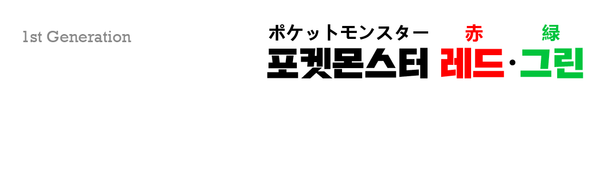
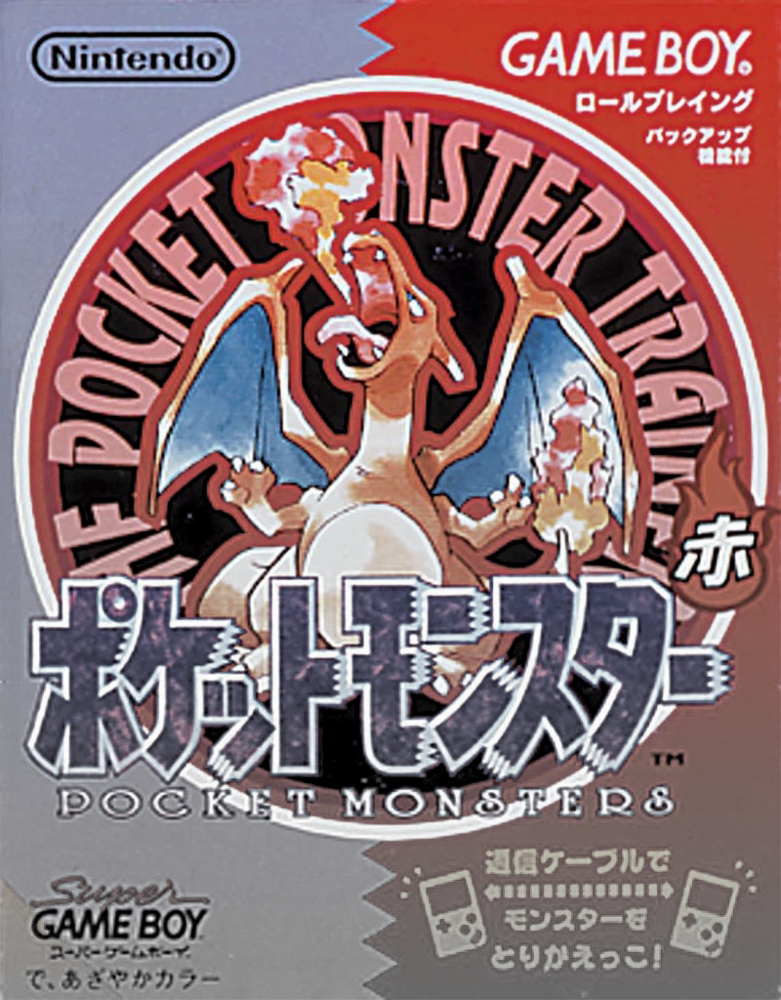
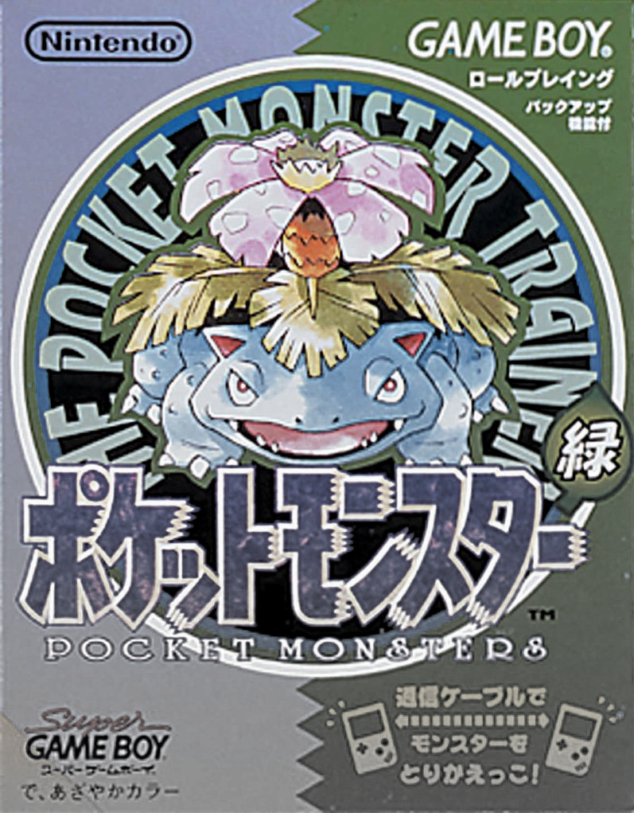
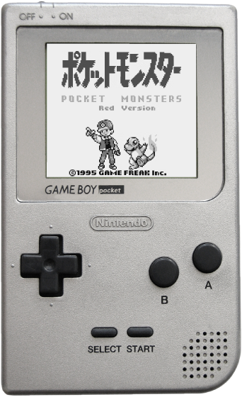
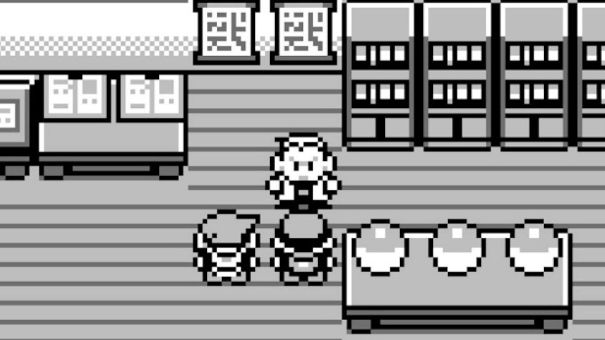
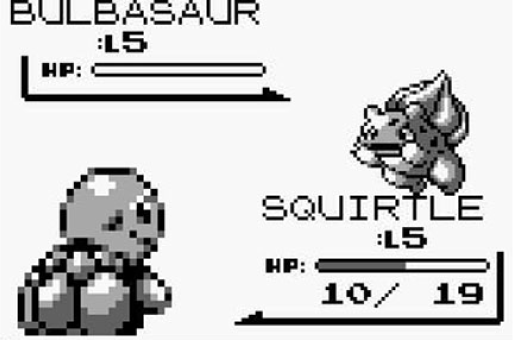
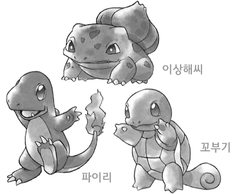
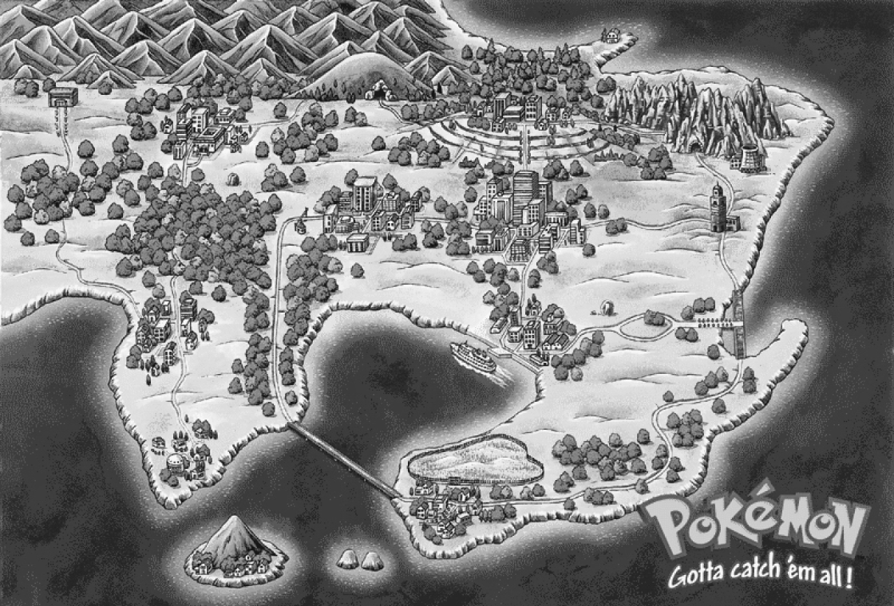
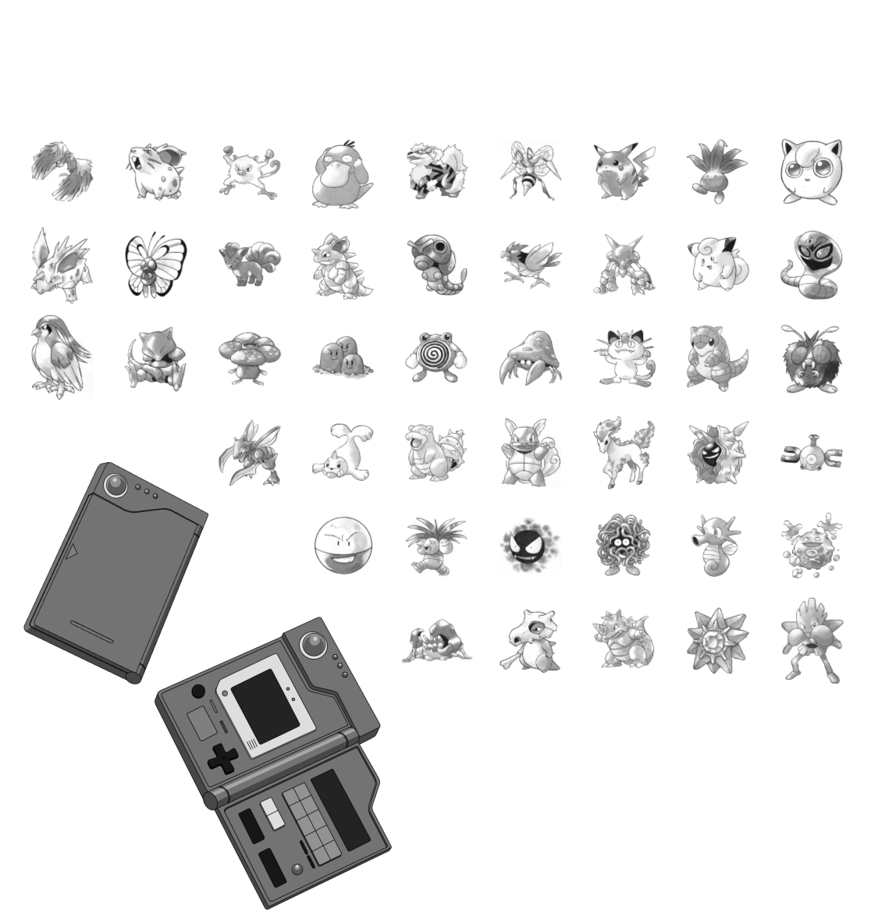

최초발매
제작회사
유통회사
플랫폼
장르
Game Freak
Nintendo
GAMEBOY
RPG

포켓몬스터 레드

포켓몬스터 그린
포켓몬 시리즈의 첫 작품!
1996년 2월 27일, 게임 프리크(Game Freak) 사가 제작하고
닌텐도가 유통한 게임보이 RPG 게임, 포켓몬스터가 등장한다.
게임보이 자체의 인기가 식어갈 무렵, 혜성같이 등장한 이 게임은
출시 22년이 지난 현재까지 시리즈를 이어가며 게임 프리크와
닌텐도의 막강한 수입원이 되어주고 있다. 발매 후 차기작인 블루
버전과 함께 1,023만 장의 판매고를 올리며 닌텐도 포켓몬
시대의 시작을 알린 작품이다.
흑백 게임기 GAMEBOY 기반이었기에 흑백 게임이었다.



파트너를 선택해 모험을 시작!
모험의 시작과 함께 주인공은 세 마리의 포켓몬 중의 한 마리를
파트너로 선택할 수 있다! 풀 타입의 이상해씨, 불 타입의 파이리
그리고 물 타입의 꼬부기. 이것은 추후에 시리즈의 전통이 되어
다른 세대에도 이어진다.


1세대 포켓몬스터 게임의 무대이자 포켓몬 세계 모험의 시작, 관동 지방 지도

목표는 포켓몬 도감 완성!
모험의 무대 ‘관동 지방’에는 모두 151가지 종류의 포켓몬이
살고 있다. 이들을 몬스터볼에 포획해서 데이터를 모두
모험을 시작할 때 오박사님에게 받았던 ‘포켓몬 도감’에
기록하는 것이 이 모험의 목표이다.